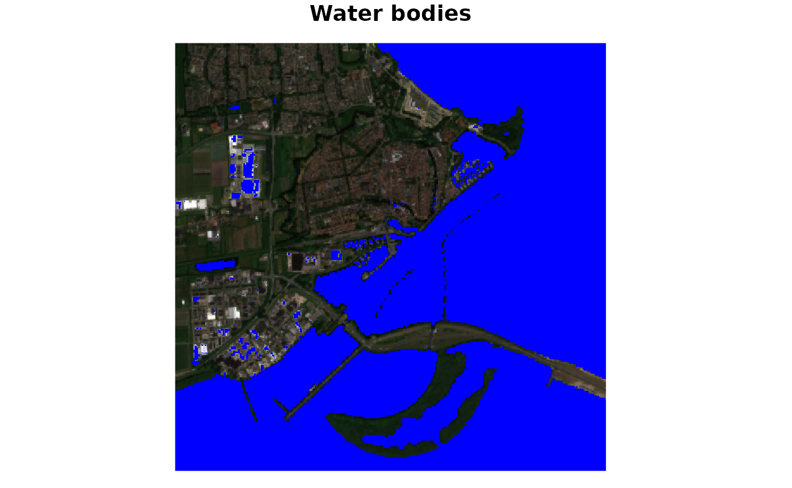
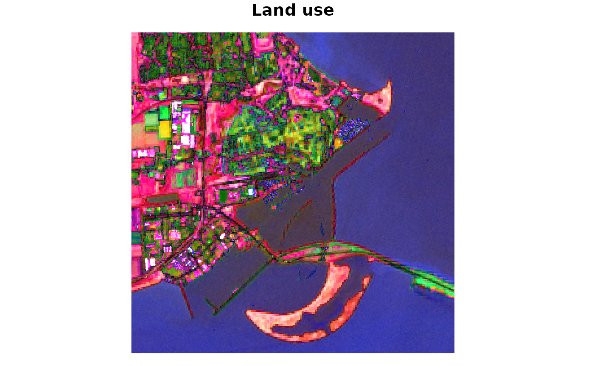

Sentinel Hub functions as the core engine for accessing, processing, and visualizing massive amounts of satellite data. It acts as a cloud-based service that allows users to interact with the full archive of Sentinel and other Earth Observation (EO) data without needing to download large files to their local machines.
The overall process involves identifying relevant data sets. The send the description of the input data together with a special script to process data to the server. The server processes the data and you can download the result.
Data Exploration
A good point to start using SentinelHub is by listing the collections that are available for this service.
library(CopernicusDataspace)
library(stars) ## required below for reading and plotting data
library(dplyr) ## used for data manipulation below
dse_sh_collections()
#> # A tibble: 10 × 13
#> stac_version stac_extensions type id title description `sci:citation`
#> <chr> <list> <chr> <chr> <chr> <chr> <chr>
#> 1 1.0.0 <list [2]> Collecti… sent… Sent… Sentinel 2… Modified Cope…
#> 2 1.0.0 <list [3]> Collecti… sent… Sent… Sentinel 3… Modified Cope…
#> 3 1.0.0 <list [3]> Collecti… land… Land… Landsat 8-… Landsat 8-9 p…
#> 4 1.0.0 <list [3]> Collecti… sent… Sent… Sentinel 3… Modified Cope…
#> 5 1.0.0 <list [3]> Collecti… sent… Sent… Sentinel 3… Modified Cope…
#> 6 1.0.0 <list [3]> Collecti… sent… Sent… Sentinel 3… Modified Cope…
#> 7 1.0.0 <list [3]> Collecti… sent… Sent… Sentinel 3… Modified Cope…
#> 8 1.0.0 <list [4]> Collecti… sent… Sent… Sentinel 1… Modified Cope…
#> 9 1.0.0 <list [2]> Collecti… sent… Sent… Sentinel 2… Modified Cope…
#> 10 1.0.0 <list [3]> Collecti… sent… Sent… Sentinel 5… Modified Cope…
#> # ℹ 6 more variables: license <chr>, providers <list>,
#> # extent.spatial.bbox <list>, extent.temporal.interval <list>,
#> # summaries <list>, links <list>You can also search products using SentinelHub by creating a
dse_sh_search_request(). You can add a narrow down the
search with a tidyverse filter(). You need to retrieve the
search results by calling collect():
bounds <- c(5.261, 52.680, 5.319, 52.715)
if (dse_has_client_info()) {
dse_sh_search_request(
collection = "sentinel-2-l2a",
bbox = bounds,
datetime = c("2025-01-01 UTC", "2025-01-31 UTC")
) |>
filter(`eo:cloud_cover` <= 10) |>
collect()
}
#> # A tibble: 1 × 21
#> stac_version stac_extensions id type geometry bbox properties.datetime
#> <chr> <list> <chr> <chr> <list> <list> <chr>
#> 1 1.0.0 <list [2]> S2B_MS… Feat… <tibble> <list> 2025-01-26T10:46:2…
#> # ℹ 14 more variables: properties.platform <chr>,
#> # properties.instruments <list>, properties.constellation <chr>,
#> # properties.gsd <int>, `properties.eo:cloud_cover` <dbl>,
#> # `properties.proj:epsg` <int>, `properties.proj:bbox` <list>,
#> # `properties.proj:geometry.type` <chr>,
#> # `properties.proj:geometry.crs.type` <chr>,
#> # `properties.proj:geometry.crs.properties.name` <chr>, …Data Downloading
SentinelHub is a processing service, meaning that you should not to attempt downloading raw data. Instead, you need to specify which subset of data you wish to process, how you wish to process it, and how you like to have your results.
In order to specify your input data you can use the helper function
dse_sh_prepare_input(). The function
dse_sh_prepare_output() is to help you formulate your
output specifications.
For the processing of the data, SentinelHub uses JavaScript. It is referred to as EvalScript. The technical manual describes what the script should look like.
You can use dse_sh_get_custom_script() to retrieve
existing custom scripts from the default repository.
The steps presented above are demonstrated below:
## prepare input data:
input <-
dse_sh_prepare_input(
bounds = bounds,
time_range = c("2025-06-01 UTC", "2025-07-01 UTC")
)
## prepare ouput format:
output <- dse_sh_prepare_output(bbox = bounds)
## retrieve processing script:
evalscript <- dse_sh_get_custom_script("/sentinel-2/l2a_optimized/")
## destination file:
fl <- tempfile(fileext = ".tiff")Once you have all these elements ready, you can submit your request
to SentinelHub and retrieve the result, using
dse_sh_process(). In order to submit this request, you need
an access token, which in turn requires a client_id and
client_secret. For more information about this check out
vignette("Authentication").
if (dse_has_client_info()) {
## send request and download result:
dse_sh_process(input, output, evalscript, fl)
}If you like to use a graphical user interface to prepare your
SentinelHub request, you can use the Requests-Builder
in your web browser. You can create a request through the provided menu
and it is shown in a text field. You can copy this text and submit it to
SentinelHub with dse_sh_use_requests_builder().
Eval Scripts
As mentioned above, there are many readily developed Eval Scripts available. You can list the available scripts on the repository using:
dse_sh_custom_scripts()
#> # A tibble: 361 × 2
#> title relUrl
#> <chr> <chr>
#> 1 Sentinel-2 L2A Scene Classification Map /sent…
#> 2 NDVI Anomaly Detection Script /sent…
#> 3 Simple RGB Composites (Sentinel-2) /sent…
#> 4 Land Use Visualization for Sentinel-2 Using Linear Discriminant Analy… /sent…
#> 5 Multitemporal burnt area analysis /sent…
#> 6 Sentinel-2 L2A True Color Optimized /sent…
#> 7 NDWI Normalized Difference Water Index /sent…
#> 8 Detecting Deep Moist Convection Script /sent…
#> 9 Sentinel-2 L1C True Color Optimized /sent…
#> 10 Water Bodies' Mapping - WBM Script /sent…
#> # ℹ 351 more rowsAs each script has a unique way of processing the raw data, you can
quickly create different visualisations of the satellite information.
Lets illustrate this by reusing the same input and
output specifications as defined above.
if (dse_has_client_info()) {
evalscript <-
dse_sh_get_custom_script("/sentinel-2/simple_water_bodies_mapping-swbm/")
## destination file:
fl_waterbody <- tempfile(fileext = ".tiff")
## send request and download result:
dse_sh_process(input, output, evalscript, fl_waterbody)
## read and plot result:
waterbodies <- read_stars(fl_waterbody) |> suppressWarnings()
plot(waterbodies, rgb = 1:3, main = "Water bodies")
}
This maps shows water bodies in blue. In this particular case, it does a decent job, however some greenhouses show up as water bodies (i.e., false-positives). It must be noted that here the script was just used as is, and might need some tweaking of parameters for better performance.
Below an example of how the same raw data can be visualised differently, using another dedicated EvalScript.
if (dse_has_client_info()) {
evalscript <-
dse_sh_get_custom_script("/sentinel-2/land_use_with_linear_discriminant_analysis/")
## destination file:
fl_landuse <- tempfile(fileext = ".tiff")
## send request and download result:
dse_sh_process(input, output, evalscript, fl_landuse)
## read and plot result:
landuse <- read_stars(fl_landuse) |> suppressWarnings()
plot(landuse, rgb = 1:3, main = "Land use")
}